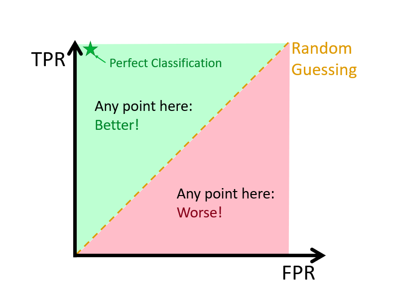

Chapter 10 Tuning in Classification
What metrics are we going to use when we train our classification models? In other words, how are we going to compare the performance of different classification models when we tune our hyperparameters? In kNN, for example, our hyperparameter is \(k\), the number of observations in each bin. In our applications with mnist_27 and Adult datasets, it seems that \(k\) was determined by a metric called as accuracy. What is it? If the choice of \(k\) depends on what metrics we use in tuning, can we improve our prediction performance by using a different metric? These are important questions in machine learning and we will begin answering them in this chapter.
In our first classification models, LPM and logistic regressions in Chapter 5, we were not training them as they didn’t have any tuning parameters. Remember, we estimated the model parameters that were internal characteristics of the model such that their value can be estimated from data. The value of the hyperparameter, on the other hand, has to be set before the learning process begins because those tuning parameters are external to the model and their value cannot be estimated from data. In LPM, the set of parameters is chosen by OLS such that the model with that set parameters has the minimum RMSE. In logistic regressions, we use MLE. The optimal parameters are the ones that minimize the residual deviance. We has seen them earlier chapters.
In general, whether it’s for training or not, measuring the performance of a classification model is an important issue and has to be well understood before fitting or training a model.
10.1 Confusion matrix
To evaluate a model’s fit, we can look at its predictive accuracy. In classification problems, this requires predicting \(Y\), as either 0 or 1, from the predicted value of \(p(x)\), such as
\[ \hat{Y}=\left\{\begin{array}{ll}{1,} & {\hat{p}\left(x_{1}, \ldots, x_{k}\right)>\frac{1}{2}} \\ {0,} & {\hat{p}\left(x_{1}, \ldots, x_{k}\right)<\frac{1}{2}}\end{array}\right. \]
From this transformation of \(\hat{p}(x)\) to \(\hat{Y}\), the overall predictive accuracy can be summarized with a matrix,
\[ \begin{array}{ccc}{\text { Predicted vs. Reality}} & {{Y}=1} & {{Y}=0} \\ {\hat{Y}=1} & {\text { TP }_{}} & {\text { FP }_{}} \\ {\hat{Y}=0} & {\text { FN }_{}} & {\text { TN }_{}}\end{array} \]
where, TP, FP, FN, TN are True positives, False Positives, False Negatives, True Negatives, respectively. This table is also know as Confusion Table or confusion matrix. The name, confusion, is very intuitive because it makes it easy to see how the system is confusing two classes.
There are many metrics that can be calculated from this table. Let’s use an example given in Wikipedia
\[ \begin{array}{ccc}{\text { Predicted vs. Reality}} & {{Y}=Cat} & {{Y}=Dog} \\ {\hat{Y}=Cat} & {\text { 5 }_{}} & {\text { 2 }_{}} \\ {\hat{Y}=Dog} & {\text { 3 }_{}} & {\text { 3 }_{}}\end{array} \]
According to this confusion matrix, there are 8 actual cats and 5 actual dogs (column totals). The learning algorithm, however, predicts only 5 cats and 3 dogs correctly. The model predicts 3 cats as dogs and 2 dogs as cats. All correct predictions are located in the diagonal of the table, so it is easy to visually inspect the table for prediction errors, as they will be represented by values outside the diagonal.
In predictive analytics, this table (matrix) allows more detailed analysis than mere proportion of correct classifications (accuracy). Accuracy (\((TP+TN)/n\)) is not a reliable metric for the real performance of a classifier, when the dataset is unbalanced in terms of numbers of observations in each class. It can be seen how misleading the use of \((TP+TN)/n\) could be, if there were 95 cats and only 5 dogs in our example. If we choose accuracy as the performance measure in our training, our learning algorithm might classify all the observations as cats, because the overall accuracy would be 95%. In that case, however, all the dog would be misclassified as cats.
10.2 Performance measures
Which metrics should we be using in training our classification models? These questions are more important when the classes are not in balance. Moreover, in some situation, false predictions would be more important then true predictions. In a situation that you try to predict, for example, cancer, minimizing false negatives (the model misses cancer patients) would be more important than minimizing false positives (the model wrongly predicts cancer). When we have an algorithm to predict spam emails, however, false positives would be the target to minimize rather than false negatives.
Here is the full picture of various metrics using the same confusion table from Wikipedia:

Let’s summarize some of the metrics and their use with examples for detecting cancer:
- Accuracy: the number of correct predictions (with and without cancer) relative to the number of observations (patients). This can be used when the classes are balanced with not less than a 60-40% split. \((TP+TN)/n\).
- Balanced Accuracy: When the class balance is worse than 60-40% split, \((TP/P + TN/N)/2\).
- Precision: Proportion of patients that we predict as having cancer, actually have cancer, \(TP/(TP+FP)\).
- Sensitivity: Proportion of patients that actually have cancer was correctly predicted by the algorithm as having cancer, \(TP/(TP+FN)\). This measure is also called as True Positive Rate or as Recall.
- Specificity: Proportion of patients that do not have cancer, are predicted by the model as non-cancerous, \(TN/(TN+FP)\).
Here is the summary:
\[ \begin{array}{ccc}{\text { Predicted vs. Reality}} & {{Y}=Cat} & {{Y}=Dog} \\ {\hat{Y}=Cat} & {\text {TPR or Sensitivity }_{}} & {\text { FNR or Fall-out }_{}} \\ {\hat{Y}=Dog} & {\text { FNR or Miss Rate }_{}} & {\text { TNR or Specificity }_{}}\end{array} \]
Kappa is also calculated in most cases. It is an interesting measure because it compares the actual performance of prediction with what it would be if a random prediction was carried out. For example, suppose that your model predicts \(Y\) with 95% accuracy. How good your prediction power would be if a random choice would also predict 70% of \(Y\)s correctly? Let’s use an example:
\[ \begin{array}{ccc}{\text { Predicted vs. Reality}} & {{Y}=Cat} & {{Y}=Dog} \\ {\hat{Y}=Cat} & {\text { 22 }_{}} & {\text { 9 }_{}} \\ {\hat{Y}=Dog} & {\text { 7 }_{}} & {\text { 13 }_{}}\end{array} \]
In this case the accuracy is \((22+13)/51 = 0.69\) But how much of it is due the model’s performance itself? In other words, the distribution of cats and dogs can also give a predictive clue such that a certain level of prediction accuracy can be achieved by chance without any learning algorithm. For the TP cell in the table this can be calculated as the difference between observed accuracy (OA) and expected accuracy (EA),
\[ \mathrm{(OA-EA)_{TP}}=\mathrm{Pr}(\hat{Y}=Cat)[\mathrm{Pr}(Y=Cat |\hat{Y}= Cat)-\mathrm{P}(Y=Cat)], \]
Remember from your statistics class, if the two variables are independent, the conditional probability of \(X\) given \(Y\) has to be equal to the marginal probability of \(X\). Therefore, inside the brackets, the difference between the conditional probability, which reflects the probability of predicting cats due to the model, and the marginal probability of observing actual cats reflects the true level of predictive power of the model by removing the randomness in prediction.
\[ \mathrm{(OA-EA)_{TN}}=\mathrm{Pr}(\hat{Y}=Dog)[\mathrm{Pr}(Y=Dog |\hat{Y}= Dog)-\mathrm{P}(Y=Dog)], \]
If we use the joint and marginal probability definitions, these can be written as:
\[ OA-EA=\frac{m_{i j}}{n}-\frac{m_{i} m_{j}}{n^{2}} \]
Here is the calculation of Kappa for our example:
Total, \(n = 51\),
\(OA-EA\) for \(TP\) = \(22/51-31*29/51^2 = 0.0857\)
\(OA-EA\) for \(TN\) = \(13/51-20*21/51^2 = 0.0934\)
And we normalize it by \(1-EA = 1- 31*29/51^2 + 20*21/51^2 = 0.51\), which is the value if the prediction was 100% successful.
Hence, Kappa: \((0.0857+0.0934) / (1 - 0.51) = 0.3655\)
Finally, Jouden’s J statistics also as known as Youden’s index or Informedness, is a single statistics that captures the performance of prediction. It’s simply \(J=TPR+TNR-1\) and ranges between 0 and 1 indicating useless and perfect prediction performance, respectively. This metric is also related to Receiver Operating Curve (ROC) analysis, which is the subject of the next section.
10.3 ROC - Reciever Operating Curve
Here is a good definition for ROC by Wikipedia:
A receiver operating characteristic curve, or ROC curve, is a graphical plot that illustrates the diagnostic ability of a binary classifier system as its discrimination threshold is varied. The ROC curve is created by plotting the true positive rate (TPR) against the false positive rate (FPR) at various threshold settings.
Here is a visualization:

Let’s start with an example, where we have 100 individuals, 50 \(y_i=1\) and 50 \(y_i=0\), which is well-balanced. If we use a discriminating threshold (0%) that puts everybody into Category 1 or a threshold (100%) that puts everybody into Category 2, that is,
\[ \hat{Y}=\left\{\begin{array}{ll}{1,} & {\hat{p}\left(x_{1}, \ldots, x_{k}\right)>0 \%} \\ {0,} & {\hat{p}\left(x_{1}, \ldots, x_{k}\right)\leq0 \%}\end{array}\right. \]
And,
\[ \hat{Y}=\left\{\begin{array}{ll}{1,} & {\hat{p}\left(x_{1}, \ldots, x_{k}\right)>100 \%} \\ {0,} & {\hat{p}\left(x_{1}, \ldots, x_{k}\right)\leq100 \%}\end{array}\right. \]
this would have led to the following tables, respectively:
\[ \begin{array}{ccc}{\text { Predicted vs. Reality}} & {{Y}=1} & {{Y}=0} \\ {\hat{Y}=1} & {\text { 50 }_{}} & {\text { 50 }_{}} \\ {\hat{Y}=0} & {\text { 0 }_{}} & {\text { 0 }_{}}\end{array} \] \[ \begin{array}{ccc}{\text { Predicted vs. Reality}} & {{Y}=1} & {{Y}=0} \\ {\hat{Y}=1} & {\text { 0 }_{}} & {\text { 0 }_{}} \\ {\hat{Y}=0} & {\text { 50 }_{}} & {\text { 50 }_{}}\end{array} \]
In the first case, \(TPR = 1\) and \(FPR = 1\); and in the second case, \(TPR = 0\) and \(FPR = 0\). So when we calculate all possible confusion tables with different values of thresholds ranging from 0% to 100%, we will have the same number of (\(TPR, FPR\)) points each corresponding one threshold. The ROC curve is the curve that connects these points.
Let’s use an example with the Boston Housing Market dataset to illustrate ROC:
library(MASS)
?Boston
str(Boston)## 'data.frame': 506 obs. of 14 variables:
## $ crim : num 0.00632 0.02731 0.02729 0.03237 0.06905 ...
## $ zn : num 18 0 0 0 0 0 12.5 12.5 12.5 12.5 ...
## $ indus : num 2.31 7.07 7.07 2.18 2.18 2.18 7.87 7.87 7.87 7.87 ...
## $ chas : int 0 0 0 0 0 0 0 0 0 0 ...
## $ nox : num 0.538 0.469 0.469 0.458 0.458 0.458 0.524 0.524 0.524 0.524 ...
## $ rm : num 6.58 6.42 7.18 7 7.15 ...
## $ age : num 65.2 78.9 61.1 45.8 54.2 58.7 66.6 96.1 100 85.9 ...
## $ dis : num 4.09 4.97 4.97 6.06 6.06 ...
## $ rad : int 1 2 2 3 3 3 5 5 5 5 ...
## $ tax : num 296 242 242 222 222 222 311 311 311 311 ...
## $ ptratio: num 15.3 17.8 17.8 18.7 18.7 18.7 15.2 15.2 15.2 15.2 ...
## $ black : num 397 397 393 395 397 ...
## $ lstat : num 4.98 9.14 4.03 2.94 5.33 ...
## $ medv : num 24 21.6 34.7 33.4 36.2 28.7 22.9 27.1 16.5 18.9 ...data(Boston)Let’s estimate it with a logistic regression to see what characteristics are associated with whether the suburb (town) is a “wealthy” town evaluated by its median house price higher than $25K.
data <- Boston[, -14] #Dropping "medv"
data$dummy <- c(ifelse(Boston$medv > 25, 1, 0))
model <- glm(dummy ~ ., data = data, family = "binomial")
summary(model)##
## Call:
## glm(formula = dummy ~ ., family = "binomial", data = data)
##
## Deviance Residuals:
## Min 1Q Median 3Q Max
## -3.3498 -0.2806 -0.0932 -0.0006 3.3781
##
## Coefficients:
## Estimate Std. Error z value Pr(>|z|)
## (Intercept) 5.312511 4.876070 1.090 0.275930
## crim -0.011101 0.045322 -0.245 0.806503
## zn 0.010917 0.010834 1.008 0.313626
## indus -0.110452 0.058740 -1.880 0.060060 .
## chas 0.966337 0.808960 1.195 0.232266
## nox -6.844521 4.483514 -1.527 0.126861
## rm 1.886872 0.452692 4.168 3.07e-05 ***
## age 0.003491 0.011133 0.314 0.753853
## dis -0.589016 0.164013 -3.591 0.000329 ***
## rad 0.318042 0.082623 3.849 0.000118 ***
## tax -0.010826 0.004036 -2.682 0.007314 **
## ptratio -0.353017 0.122259 -2.887 0.003884 **
## black -0.002264 0.003826 -0.592 0.554105
## lstat -0.367355 0.073020 -5.031 4.88e-07 ***
## ---
## Signif. codes: 0 '***' 0.001 '**' 0.01 '*' 0.05 '.' 0.1 ' ' 1
##
## (Dispersion parameter for binomial family taken to be 1)
##
## Null deviance: 563.52 on 505 degrees of freedom
## Residual deviance: 209.11 on 492 degrees of freedom
## AIC: 237.11
##
## Number of Fisher Scoring iterations: 7And our prediction (in-sample):
# Classified Y's by TRUE and FALSE
yHat <- model$fitted.values > 0.5
conf_table <- table(yHat, data$dummy)
conf_table##
## yHat 0 1
## FALSE 366 24
## TRUE 16 100#let's change the order of cells
ctt <- as.matrix(conf_table)
ct <- matrix(0, 2, 2)
ct[1,1] <- ctt[2,2]
ct[2,2] <- ctt[1,1]
ct[1,2] <- ctt[2,1]
ct[2,1] <- ctt[1,2]
rownames(ct) <- c("Yhat = 1", "Yhat = 0")
colnames(ct) <- c("Y = 1", "Y = 0")
ct## Y = 1 Y = 0
## Yhat = 1 100 16
## Yhat = 0 24 366It would be much easier if we create our own function to rotate a matrix/table:
rot <- function(x){
t <- apply(x, 2, rev)
tt <- apply(t, 1, rev)
return(t(tt))
}
ct <- rot(conf_table)
rownames(ct) <- c("Yhat = 1", "Yhat = 0")
colnames(ct) <- c("Y = 1", "Y = 0")
ct##
## yHat Y = 1 Y = 0
## Yhat = 1 100 16
## Yhat = 0 24 366Now we calculate our TPR, FPR, and J-Index:
#TPR
TPR <- ct[1,1]/(ct[1,1]+ct[2,1])
TPR## [1] 0.8064516#FPR
FPR <- ct[1,2]/(ct[1,2]+ct[2,2])
FPR## [1] 0.04188482#J-Index
TPR-FPR## [1] 0.7645668These rates are calculated for the threshold of 0.5. Now we have to have all pairs of \(TPR\) and \(FPR\) for possible discrimination thresholds. What’s the possible set? We will use our \(\hat{P}\) values for this.
#We create an ordered grid from our fitted values
summary(model$fitted.values)## Min. 1st Qu. Median Mean 3rd Qu. Max.
## 0.000000 0.004205 0.035602 0.245059 0.371758 0.999549phat <- model$fitted.values[order(model$fitted.values)]
length(phat)## [1] 506#We need to have containers for the pairs of TPR and FPR
TPR <- c()
FPR <- c()
#Now the loop
for (i in 1:length(phat)) {
yHat <- model$fitted.values > phat[i]
conf_table <- table(yHat, data$dummy)
ct <- as.matrix(conf_table) #No need to change the table for calculations
if(sum(dim(ct))>3){ #here we ignore the thresholds 0 and 1
TPR[i] <- ct[2,2]/(ct[2,2]+ct[1,2])
FPR[i] <- ct[2,1]/(ct[1,1]+ct[2,1])
}
}
plot(FPR, TPR, col= "blue", type = "l", main = "ROC", lwd = 3)
abline(a = 0, b = 1, col="red")
There are a couple of things on this curve to talk about. First, it shows that there is a trade-off between TPF and FPR. Approximately, after 70% of TPR, an increase in TPF can be achieved by increasing FPR. That means that if we care more about the possible lowest FPR, we can fix the discriminating rate at that point, although marginal gain on TPR would be higher than FPR at higher thresholds.
Second, we can identify the best discriminating threshold that makes the distance between TPR and FPR largest. In other words, we can identify the threshold where the marginal gain on TPR would be equal to the marginal cost of FPR. This can be achieved by the Jouden’s J statistics, \(J=TPR+TNR-1\), which identifies the best discriminating threshold. Note that \(TNR= 1-FPR\). Hence \(J = TPR-FPR\).
# Youden's J Statistics
J <- TPR - FPR
# The best discriminating threshold
phat[which.max(J)]## 231
## 0.1786863#TPR and FPR at this threshold
TPR[which.max(J)]## [1] 0.9354839FPR[which.max(J)]## [1] 0.1361257J[which.max(J)]## [1] 0.7993582This simple example shows that the best (in-sample) fit can be achieved by
\[ \hat{Y}=\left\{\begin{array}{ll}{1,} & {\hat{p}\left(x_{1}, \ldots, x_{k}\right)>17.86863 \%} \\ {0,} & {\hat{p}\left(x_{1}, \ldots, x_{k}\right)\leq17.86863 \%}\end{array}\right. \] Earlier, we have seen that, when we use an arbitrary threshold, 0.5, the J-index was 0.76456. For more on ROC see Fawcett (2006), An Introduction to ROC Analysis. The summary about the origin of ROC can be found in Wikipedia
The ROC curve was first used during World War II for the analysis of radar signals before it was employed in signal detection theory. Following the attack on Pearl Harbor in 1941, the United States army began new research to increase the prediction of correctly detected Japanese aircraft from their radar signals. For these purposes they measured the ability of a radar receiver operator to make these important distinctions, which was called the Receiver Operating Characteristic.
10.4 AUC - Area Under the Curve
Finally, we measure the accuracy by the area under the ROC curve. An area of 1 represents a perfect performance; an area of 0.5 represents a worthless prediction. This is because an area of 0.5 suggests its performance is no better than random chance.

A rough guide for classifying the accuracy of a diagnostic test in medical procedures is given by Thomas G. Tape at Interpreting Diagnostic Tests:
0.90-1.00 = excellent (A)
0.80-0.90 = good (B)
0.70-0.80 = fair (C)
0.60-0.70 = poor (D)
0.50-0.60 = fail (F)The area measures discrimination, that is, the ability of the test to correctly classify those with and without the disease. Consider the situation in which patients are already correctly classified into two groups. You randomly pick on from the disease group and one from the no-disease group and do the test on both. The patient with the more abnormal test result should be the one from the disease group. The area under the curve is the percentage of randomly drawn pairs for which this is true (that is, the test correctly classifies the two patients in the random pair).
In addition to AUC, Gini’s \(\gamma\) is also used in measuring the performance of a classification:
\[
\gamma=2 \mathrm{AUC}-1
\]
\(AUC= \gamma = 1\) is an indicator for a perfect classifier while \(AUC= 1/2\) and \(\gamma = 0\) for a random classifier. Since the formula and its derivation is beyond the scope of this chapter, we will use the package ROCR to calculate it.
library(ROCR)
data$dummy <- c(ifelse(Boston$medv > 25, 1, 0))
model <- glm(dummy ~ ., data = data, family = "binomial")
phat <- model$fitted.values
phat_df <- data.frame(phat, "Y" = data$dummy)
pred_rocr <- prediction(phat_df[,1], phat_df[,2])
perf <- performance(pred_rocr,"tpr","fpr")
plot(perf, colorize=TRUE)
abline(a = 0, b = 1)
auc_ROCR <- performance(pred_rocr, measure = "auc")
AUC <- auc_ROCR@y.values[[1]]
AUC## [1] 0.9600363As we said at the outset, we used only one dataset. Hence, we did not train a model by using cross validation. If our objective to build a prediction model, we must choose the optimal threshold with a proper training process. We will leave this to cover in the labs.
However, when we train a model, in each run (different train and test sets) we will obtain a different AUC. This difference in AUC in each sample of train and validation sets creates an uncertainty about AUC. This issue has been a subject of discussions in the literature.
A nice summary about the issue can be found in a recent blog at Statistical Odd & Ends: What is the DeLong test for comparing AUCs? (Tay 2020).
Another important point is that AUC represents the entire area under the curve. However, our interest is often on a specific location of TPR or FPR. Hence it’s possible that, for any given two competing algorithms, while one prediction algorithm has a higher overall AUC, the other one could have a better AUC in that specific location. This issue can be seen in the following figure taken from Bad practices in evaluation methodology relevant to class-imbalanced problems by Jan Brabec and Lukas Machlica (2018).

For example, in the domain of network traffic intrusion-detection, the imbalance ratio is often higher than 1:1000, and the cost of a false alarm for an applied system is very high. This is due to increased analysis and remediation costs of infected devices. In such systems, the region of interest on the ROC curve is for false positive rate at most 0.0001. If AUC was computed in the usual way over the complete ROC curve then 99.99% of the area would be irrelevant and would represent only noise in the final outcome. We demonstrate this phenomenon in Figure 1.
If AUC has to be used, we suggest to discuss the region of interest, and eventually compute the area only at this region. This is even more important if ROC curves are not presented, but only AUCs of the compared algorithms are reported.